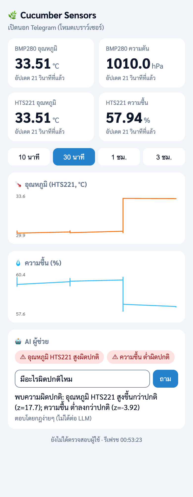

5 AI ตรวจความผิดปกติ
AI ไม่จำเป็นต้องเป็นโมเดลยักษ์ แค่ สถิติ ก็ตรวจความผิดปกติของเซนเซอร์ได้ และอธิบายให้เข้าใจได้ทุกขั้น
ไอเดีย
- เก็บค่าย้อนหลัง 60 นาที แบ่งเป็น ช่วงอ้างอิง (80% แรก) กับ ช่วงล่าสุด (20% หลัง)
- หาค่าเฉลี่ย (mean) และความแกว่งปกติ (std) ของช่วงอ้างอิง
- คำนวณ z = (เฉลี่ยช่วงล่าสุด − เฉลี่ยช่วงอ้างอิง) ÷ std
- ถ้า |z| มากกว่า 3 แปลว่าค่าห่างจากปกติมาก ให้เตือน
ตัวอย่างคิดมือ
ปกติอุณหภูมิ 30.0 °C แกว่ง ±0.2 แล้วค่าล่าสุดเฉลี่ย 31.0 °C → z = (31.0 − 30.0) ÷ 0.2 = 5 มากกว่า 3 → เตือน แต่ถ้าล่าสุด 30.3 °C → z = 1.5 ยังปกติ
โค้ดจริงอยู่ที่ detect_anomalies() ใน gateway/mqtt_collector/ai_helpers.py เรียกดูผลได้ที่
curl 'localhost:5001/api/anomaly?minutes=60'
ลองทำ
- เปิดหน้าเว็บ ให้บอร์ดทำงานอย่างน้อย 10 นาทีเพื่อให้มีข้อมูลอ้างอิง
- เอาไดร์เป่าผมเป่าใส่เซนเซอร์ (ห่างๆ) 1–2 นาที แล้วดูป้าย AI
- ลองเปลี่ยน
z_limitจาก 3 เป็น 2 แล้วทดสอบอีกครั้ง เตือนไวขึ้นหรือช้าลง มีเตือนผิดบ่อยขึ้นไหม
คิดต่อ ทำไมต้องกำหนดค่า std ขั้นต่ำ (
MIN_STD) ถ้าไม่กำหนด แล้วห้องเงียบมากจนค่าแทบไม่แกว่ง จะเกิดอะไรขึ้นข้อจำกัด
วิธีนี้เทียบกับ "เมื่อกี้" เท่านั้น ถ้าอุณหภูมิค่อยๆ เพิ่มช้ามากทั้งวันจะไม่เตือน และถ้าช่วงอ้างอิงมีเหตุการณ์ผิดปกติปนอยู่ ค่า std จะบวม ทำให้ตรวจไม่ไว นี่คือสิ่งที่ AI ทุกแบบมี: ทำงานได้ดีภายใต้สมมติฐานบางอย่าง